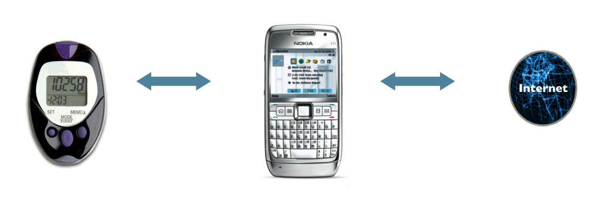
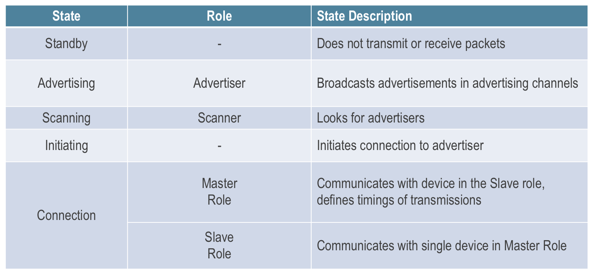
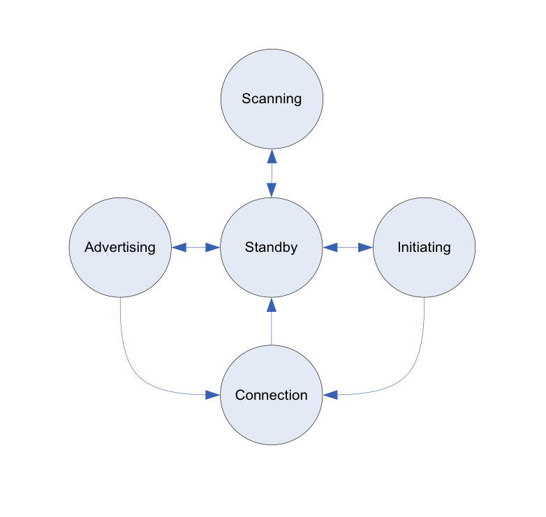
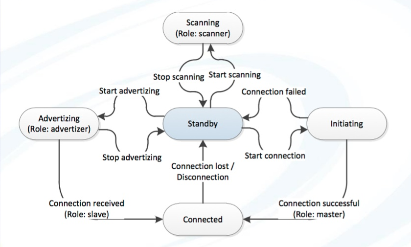
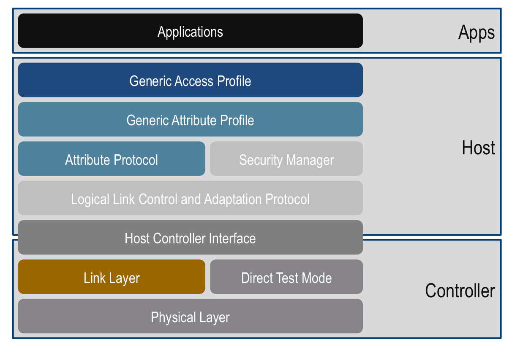
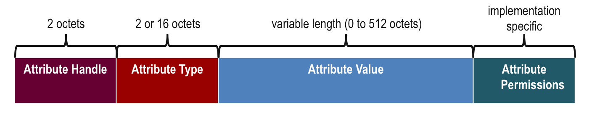
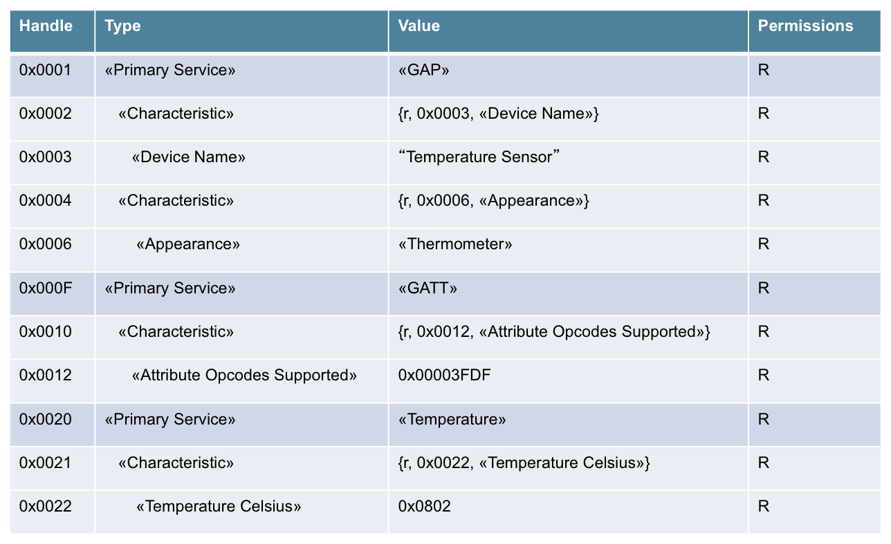
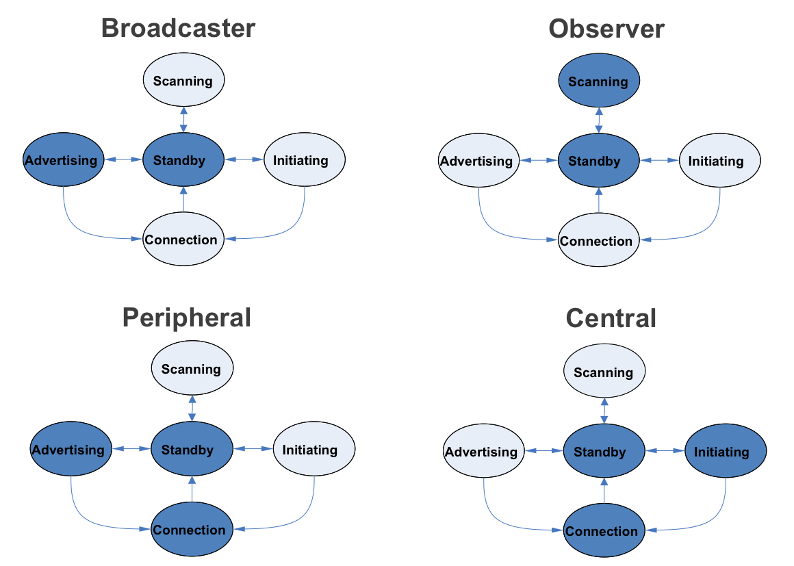

Bluetooth
Low Energy
Created by Felipe Plets / @FelipePlets
Agenda
- History (10min)
- Architecture (10min)
- Use cases (5min)
History
90s
- 1994 - Ericsson
- 1997 - Bluetooth name
- 1998 - SIG founded by Ericsson, Intel, Nokia, IBM and Toshiba
- 1998 - SIG achieve 400 members
- 1999 - Bluetooth 1.0
Past decade
- 2000 - First Mobile phone and PC card
- 2002 - v1.1 - IEEE Standard
- 2003 - v1.2 - Faster
- 2004 - v2.0 - EDR
- 2007 - v2.1 - Pairing + Security
- 2009 - v3.0 - HS (based on Wi-Fi)
Current decade
- 2010 - Bluetooth Smart (v4.0)
Classic Bluetooth, Bluetooth high speed and Bluetooth low energy - 2011 - Major hardware players start supporting v4 (Apple and Microsoft)
- 2013 - v4.1 - Internet Of Things
Smart and Low Energy
- Low cost, around $1 each chip
- 100 meter Range
- License free
- 128 bit AES CCM Encryption
- Max 15µa peak and 1µa average, meaning 2 years with a button cell

Architecture
Basics
- Client Server Architecture
- Gateways connect BLE devices with internet

States and Roles

States

State machine

Stack architecture

Generic Attribute Profile or GATT

GATT grouping

Generic Access Profile or GAP
- Define profile roles
- Broadcaster
- Observer
- Peripheral
- Central
- Defines procedures
- Discovering identities, names, and basic capabilities
- Creating bonds
- Exchange of security information
- Establishing connections
- Resolvable Private addresses
GAP profiles
